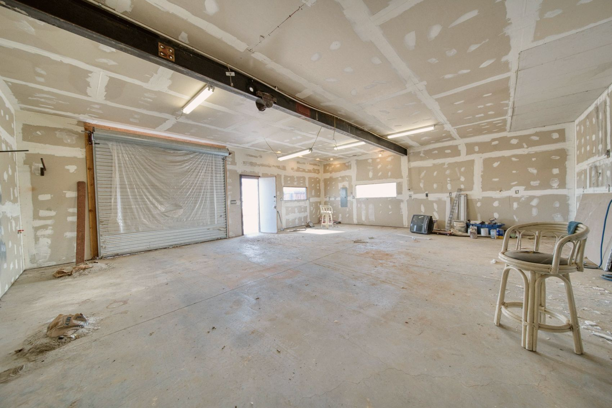
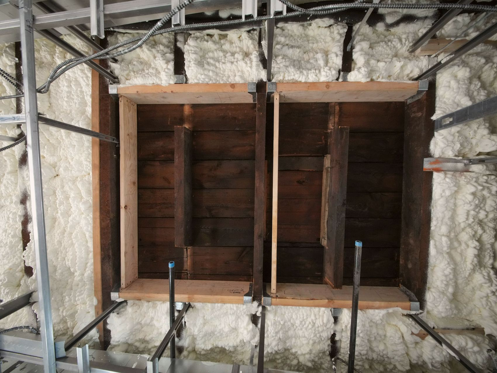
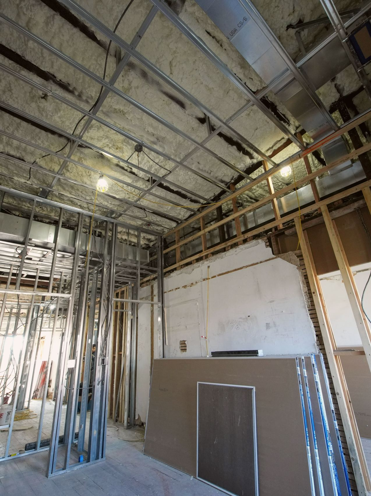

Plâtrerie et isolation, des murs bien finis.
Isolation des murs, rampants et plafonds, cloisons et finitions, près de Celles-sur-Durolle.

Ce que nous faisons
Isolation des murs, rampants et plafonds, cloisons et finitions, près de Celles-sur-Durolle.
Tous les services


Une entreprise référencée RGE.
Darras Finition figure dans l'annuaire officiel des professionnels RGE de l'ADEME pour les travaux ci-dessous. Les aides dépendent de votre situation : on en parle au moment du devis.
- Murs : isolation par l'intérieur
- Rampants de toiture ou plafonds
Quatre étapes, sans surprise.
Vous appelez
Ou vous écrivez. On prend le temps de comprendre le projet.
Visite et mesures
On regarde l'existant : supports, humidité, épaisseurs possibles.
Devis détaillé
Poste par poste, avec matériaux et délai annoncé.
Chantier suivi
Pièces protégées, surfaces livrées prêtes à peindre.
Cédric Darras dirige Darras Finition à Celles-sur-Durolle depuis 2019.
Pour un devis, un conseil ou une simple question, appelez directement.
- Création
- 2019
- Équipe
- 3 à 5
- Siège
- 63250 Celles-sur-Durolle
Avant de nous appeler.
Isolation par l'intérieur ou par l'extérieur ?+
Par l'intérieur, la façade n'est pas touchée : c'est souvent la solution en maison de bourg, en mitoyenneté ou quand la façade doit être conservée.
Comment se passe un devis ?+
Il est établi après une visite, pour chiffrer sur des mesures réelles.
Combien de temps dure un chantier ?+
Cela dépend de la surface, du support et du séchage des enduits. Le délai est écrit dans le devis.
Faut-il vider la pièce ?+
Idéalement oui. Ce qui reste est protégé, et on organise cela ensemble à la visite.

Un projet ? Parlons-en.
Décrivez-le en deux minutes, ou appelez directement.